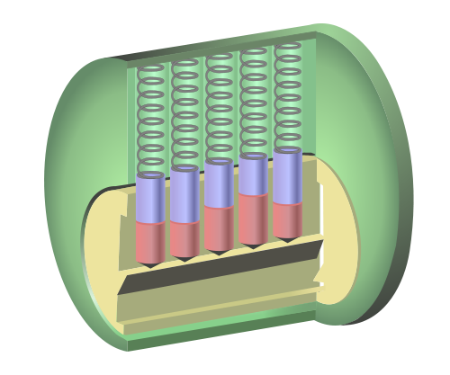

100 year old vulnerability in master-keyed locks
This one is filed under “things probably only Rachel finds interesting” but dammit, I do.
Recently, I came across this article talking about a security flaw in master-keyed locks.
You probably remember master-keyed locks from school: your teacher had a key to their classroom, but the janitor had a master key that opened all doors. There’s a flaw in this system that lets you recreate the master key easily if you have access to one of the locks and have (or have examined) its associated, non-master key.
Locksmiths (and criminals) have known about this for over a hundred years, but it was made public only in 2003. (!)
OK, first some background. The common household or commercial lock is a pin tumbler[1. I wrote "tumblr" first. I hate you, web 2.0. ] cylinder lock.

[Source: Wikipedia]
The yellow and green bits are cylinders. The yellow one is where you stick your key in, and it rotates inside the green one. Normally, it’s prevented from doing that by the red and purple pins. At rest, they block the gap between the cylinders and prevent the yellow one from turning.
When you put your key in the lock, the teeth on the key line up the pins so the gap between them coincides with the gap between the cylinders. This lets you rotate the yellow cylinder, opening the door.

[Source]
To make a lock take multiple keys, you just have multiple cuts in the pins:

The second key lines up a different set of cuts and so opens the lock. This is how master keys work: each lock is set up so it’s opened by one unique combination (the teacher key) and one common one (the janitor/master key).
Can you guess what the vulnerability is?
I’ll give you a hint: there’s more than two keys that open this lock.
The trick is, the lock doesn’t care which pins line up with the cylinder. Any combination will do. If there are five pins in the lock, a key with four teeth the same as the teacher key and one the same as the master key will still open the lock.
The attack works like this. Take a high school kid (we’ll call him Roger, no relation to my boyfriend at the time) with a predilection for trouble and access to one of the teacher keys. He could have a physical key (say he works as an aide for one of the teachers) or he could have just handled a key (the teacher temporarily lent him her keys to open the door). According to the article, pin height is usually standardized. An expert can look at a key and memorize the values. A photo or an impression in clay would also work.
Let’s say Roger figures out the key is for a five pin lock with pin heights from 1-4. In this notation, his key is 23421.
All he has to do is make keys where only one of the pins changes:
- 43421
- 33421
- 13421
and try them in the lock. If 33421 opens the lock, he knows the first pin of the master key is 3. It’s very common for people to fumble with keys, so trying three or four keys in a row won’t make anybody suspicious. Then repeat for each of the pins.
Also note Roger doesn’t have to try all combinations at once - he could vary a new pin each day. By the end of the week, he’d have the set and the entire weekend to break into the principal’s office and do unspeakable things to his desk.
I’ve glossed over some of the details, but the scholarly article is short and quite readable. Recommended: http://www.crypto.com/papers/mk.pdf